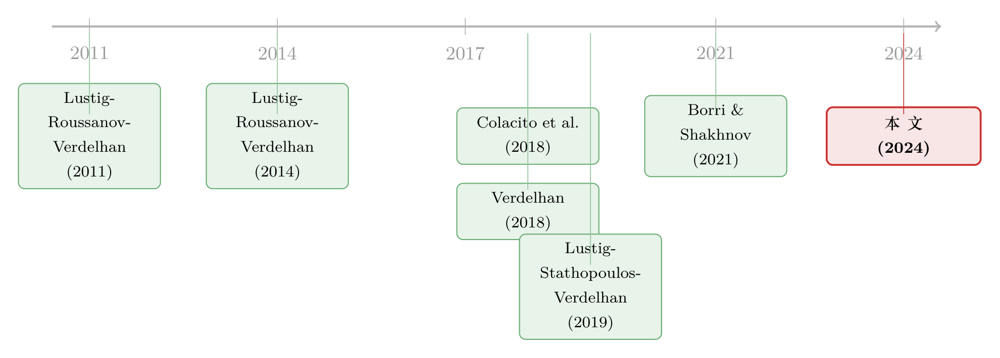

被「藏起来」的收益：当一个三十年回报为零的策略，其实从不为零
本文读的是 Andrews, Colacito, Croce & Gavazzoni (2024, Journal of Financial Economics)：一个按收益率曲线「陡峭程度」做多做空长期国债的「斜率套息 (slope carry)」策略，三十年里的平均超额收益几乎为零——但这个「零」是伪装出来的。它在 2008 年前略微为负、在 2008 年后强烈为正，两段恰好相消。作者用一个让各国对「全球增长新闻」与「全球通胀新闻」异质暴露的均衡模型，把这个伪装拆了开来。
1 引言：一个「平均为零」的策略，到底意味着什么？
做量化的人对「套息交易 (carry trade)」大概都不陌生。最经典的玩法是这样的：在外汇市场里，借入低利率货币、买入高利率货币，赚那个利差。学术上把它叫做传统套息 (traditional carry)——按各国短期利率的高低给货币排序，做多高息、做空低息。几十年里，它都是国际金融实证里最稳健的「异象」之一。
但本文真正的主角不是它，而是它的一个「表亲」：斜率套息 (slope carry)。这个策略不看短端利率的高低，而看收益率曲线 (yield curve) 的斜率——也就是长端利率减去短端利率的那个差。做多曲线更陡 (steeper) 国家的长期国债，做空曲线更平 (flatter) 国家的长期国债，持有一个月。
那么问题来了：这个斜率套息，长期能赚钱吗？
文献里的标准答案是「不能」。Lustig、Stathopoulos 与 Verdelhan (2019b) 的「货币套息期限结构」一文给出过一个相当强的结论：按曲线斜率排序去投长期主权债，超额收益应该趋近于零。本文作者把自己的数据摆出来，第一眼看上去也确认了这一点：1995 年 1 月到 2020 年 12 月这整整三十年里，斜率套息「陡-平」组合的年化平均超额收益只有 1.89%，标准误高达 [2.20]，夏普比率 0.20——统计上和零没有区别。
故事如果到这里就结束，那不过是又一篇「确认前人结论」的实证。但作者抛出的悬念恰恰在于：这个「零」，是被藏起来的。
2 把样本一刀切开：伪装是怎么露馅的
接着，一个自然的问题是：如果把样本从中间切开，会看到什么？
作者以 2008 年 8 月——全球金融危机爆发——为界，把样本分成 1995.1–2008.7（危机前）和 2008.8–2020.12（危机后）两段。结果令人吃惊：
- 危机前，斜率套息的「陡-平」收益是 −0.75%（标准误
[2.20]，夏普−0.07）——略微为负； - 危机后，同一个策略的「陡-平」收益跳到 +4.75%，而且高度显著（
***，标准误[2.08]，夏普0.51）——强烈为正。
换句话说，三十年那个「接近零」的全样本均值，并不是因为这个策略一直不温不火，而是两段方向相反的收益相互抵消的结果：前半段大致每年损失约 75 个基点 (basis points)，后半段几乎每年赚到近 500 个基点。作者给这个现象起了个非常贴切的名字——concealed（被掩藏的）。一个长期看似「无风险溢价」的策略，其实在不同的宏观状态下藏着一正一负两副面孔。
这正是石川式实证的魅力所在：平均数会骗人。一个全样本里「不显著」的系数，未必说明背后没有经济规律；它可能只是把两种相反的规律压成了一条直线。真正的信息，藏在「什么时候为正、什么时候为负」里。
然后，作者顺手把传统套息也切了一刀，得到第二个事实：传统套息在危机后显著萎缩了。全样本里，做多高息、做空低息的「高-低」组合年化赚 5.21%（***，夏普 0.53）；危机前更是高达 8.96%（夏普 0.99）；可到了危机后，只剩 1.12%，标准误 [1.39]，夏普跌到 0.11——基本失灵了。
这个萎缩反而不难理解：2008 年之后全球短端利率被压平，各国之间的利差几乎消失，传统套息「吃利差」的根基自然就被抽走了。真正反直觉、需要解释的，是斜率套息那个从负转正的反转。这就是本文要死磕的「一个核心」。
3 反转从哪里来：先看是「汇率」还是「债券」在动
但真正关键的一步，是要先搞清楚：斜率套息后半段那 4.75% 的收益，到底是从哪条腿上赚来的？
任何一笔跨国债券套息，收益都可以拆成两块：一块是汇率升贬值带来的，一块是当地债券本身的回报。作者在表 3 里做了这个分解，报告了极端组合之间的平均汇率变动 E(ΔFX)P3 − E(ΔFX)P1：
- 对传统套息，汇率的贡献一向很小、且不显著——全样本
1.39，危机后甚至变成−1.53； - 对斜率套息，汇率的贡献在危机后又大又正——
3.40（全样本0.92）。
也就是说，斜率套息后半段的强劲表现，相当一部分来自汇率：陡峭曲线国家的货币在危机后系统性地升值了。这是一个新的实证事实，作者强调它「既能被我们的均衡模型解释，也应当被未来研究纳入考量」。
接着还有一个更微妙的细节。作者发现，斜率套息组合的成分在 2008 年前后发生了关键的「换位」：英国 (UK) 和日本 (Japan) 在两个子样本里互换了位置——危机前英国是「平曲线」国家、日本是「陡曲线」国家，危机后正好掉了个个儿。这种换位本身就是收益的重要来源：如果硬把 2008 年 1 月或 7 月的组合成分固定住、之后不再调整，那么危机后的平均超额收益会变成 −2.89% 和 −2.94%——直接由正转负。而按短端利率排序的传统套息里，并不存在这种剧烈的成分换位。
于是，谜题被精炼成了一句话：是什么宏观力量，让一国的收益率曲线在 2008 年前后从「平」变「陡」，并同时推动它的货币升值？
4 第三个事实：全球的增长与通胀预期，一起塌了
于是反转出现——作者把目光从资产价格移到了宏观预期上。
他们从 OECD 拿到 G10 十国（澳、加、德、日、新西兰、挪威、瑞典、瑞士、英、美）对未来实际 GDP 增长率和通胀率的官方预测，按 GDP 加权构造出两个「全球预期」：全球预期增长 \(E_t[\Delta y_{G10,t+1}]\) 和全球预期通胀 \(E_t[\pi_{G10,t+1}]\)。
第三个事实就此浮现：2008 年之后，全球预期增长与预期通胀都系统性地下了一个台阶。 在 1995–2007 这段，平均预期通胀和预期 GDP 增长分别是 1.89 和 2.67；到了 2008 之后的子样本，双双降到 1.48 和 0.98。而且，即便把降幅最猛的 2009 年和 2020 年都剔除，这个台阶式下移依然存在——说明它不是被一两个危机年份带偏的，而是一种持久的状态切换。理论上，这正对应着一次负向的全球长期需求冲击。
但仅仅说「全球预期变低了」还不够。真正要害的是：各国对这两个全球预期的敏感度，差别极大。 作者对每个国家分别跑了两条回归：
$$E_t[\Delta y_{i,t+1}] = \mu_{i,y} + \beta_{i,y}\, E_t[\Delta y_{G10,t+1}] + \varepsilon_{i,t}$$
$$E_t[\pi_{i,t+1}] = \mu_{i,\pi} + \beta_{i,\pi}\, E_t[\pi_{G10,t+1}] + \varepsilon_{i,t}$$
这里的 \(\beta_{i,y}\) 衡量国家 \(i\) 的预期增长对全球预期增长的暴露，\(\beta_{i,\pi}\) 则衡量它对全球预期通胀的暴露。结果非常有信息量：
- 在增长维度，新西兰 (
0.353)、挪威 (0.492)、澳大利亚 (0.532) 的暴露很低，而日本高达1.422、德国0.997、加拿大0.976。这恰好印证了 Colacito 等 (2018)：传统套息里常年躺在「高息腿」的澳、新，对全球增长的暴露其实最低；而典型的「融资货币」日本，暴露最高。 - 在通胀维度，排序完全是另一副样子：挪威 (
0.233)、新西兰 (0.568) 暴露最低，而瑞典高达1.762、瑞士1.454、英国1.240、美国1.107。
注意这两套排序并不一致——一个国家可以对全球增长暴露很低，却对全球通胀暴露很高。作者后面整篇文章的理论支点，就是把这两个维度的异质性分开来用：增长暴露驱动传统套息，通胀暴露驱动斜率套息。
5 模型：用「两种全球新闻」把两个套息分别点亮
讲到这里，需要一个能把上述所有事实同时装进去的均衡框架。本文的模型是一个禀赋经济 (endowment economy)，有四块积木：
- 投资者拥有递归偏好 (recursive preferences)（即 Epstein–Zin 型，对「长期风险」敏感）；
- 金融市场完全 (complete markets)；
- 每个国家的消费增长率，对一个全球预期增长成分有异质暴露；
- 通胀由各国对一个全球预期通胀成分的国别特定暴露刻画。
作者说得很直白：前三块是为了复刻一个持续且可盈利的传统套息溢价——这正是 Colacito 等 (2018) 已经证明的机制；而第四块，才是斜率套息的命门。
5.1 传统套息的直觉
为什么对全球增长的异质暴露能产生传统套息溢价？逻辑是这样的：当一个负的增长新闻冲击到来时，套息组合会亏钱，因为「融资货币」（对全球增长暴露高的国家，比如日本）会升值。而在递归偏好下，代表性投资者把「全球增长变差」视为一个坏状态——此时边际效用 (marginal utility) 上升。一个在坏状态里亏钱的策略，自然必须在均衡里支付正的风险溢价作为补偿。在基准校准下，模型产生的传统套息年化利差是 2.75%，并且会在全球增长与通胀低于历史均值时收窄——和危机后传统套息萎缩的事实对上了。
5.2 斜率套息的直觉：核心机制
斜率套息的故事则全靠通胀。在模型里，投资高全球通胀暴露国家的长期债券，能赚到一个正的超额收益——因为这些债券承担了更多的名义利率风险。关键的一环是：
在低于平均的预期通胀时期（比如 2008 年之后），高全球通胀暴露的国家，倾向于拥有更低的利率和更陡的收益率曲线。
把这一条和「斜率套息要做多陡曲线国家」叠在一起，就完成了闭环：当全球预期通胀偏低时，按「陡曲线」排序去做多，实际上等于做多了高通胀暴露的国家；而投资这些国家要求更高的通胀风险溢价，于是斜率套息此时必然支付正的平均收益。反过来，在全球预期通胀偏高的时期（比如全球金融危机之前，乃至作者在第 5 节讨论的 1975–1985 那段通胀剧变的年代），高通胀暴露国家的曲线反而更平，斜率套息就该是负的。
这就把那个「被掩藏的零」彻底解释清楚了：斜率套息的无条件均值接近零，但它条件于全球通胀状态会剧烈摆动。模型给出的数字相当戏剧化——基准校准下，斜率套息的无条件平均超额收益接近零，但在 2008 年之后却高达 7.65%。作者还指出，2020–21 年疫情期间也上演了同样一幕：通胀预期 2020 年骤降时斜率套息大赚，等通胀预期被重新上修后它就熄火了。
5.3 从无套利看：永久成分的熵
更深一层的刻画来自无套利 (no arbitrage)。沿着 Lustig 等 (2019b) 的思路，斜率套息的风险溢价，紧紧系于极端排序组合里各国随机贴现因子 (stochastic discount factor, SDF) 永久成分的熵 (entropy)。在本文模型里，这个熵在国别层面是常数，但在横截面上是异质的。于是只要组合的成分随时间变化，组合层面的熵就会时变——而第 3 节里英、日两国在 2008 年前后的换位，正是这种成分变化的活样本。这一步把「成分换位驱动收益」这个实证发现，和模型的无套利结构严丝合缝地接上了。
5.4 一个把收益拆开看的恒等式
要理解上面所有机制如何落到一笔具体的套息收益上，最有用的还是作者给出的那个收益分解恒等式。记 \(\log R^{FX,n}_{i,t}\) 为「做空美国 3 月期国债、做多国家 \(i\) 的 \(n\) 月期债券」这一策略持有一个月的对数收益，它可以写成：
这条恒等式之所以是全文的「锚」，是因为它把抽象的风险溢价拉回到了两个可观测的来源：当地债券回报与汇率变动。表 3 的分解、模型里「陡曲线国家货币升值」的预测，全都落在这条式子的 \(\Delta e_{us,i,t}\) 这一项上。而组合层面的收益，不过是把单国收益按 GDP 权重 \(w^p_{i,t} = GDP_i / \sum_{i\in p} GDP_i\) 加总：
$$\log R^{FX,120}_{p,t} = \sum_{i\in p} w^p_{i,t}\, \log R^{FX,120}_{i,t}, \quad p\in\{P_1,P_2,P_3\}.$$
6 文献脉络
把这篇论文放回它所在的研究长河里，线索其实很清晰。
最早，Lustig、Roussanov 与 Verdelhan (2011) 用「共同风险因子」奠定了货币套息的实证基石，随后 Lustig、Roussanov 与 Verdelhan (2014) 又揭示了货币风险溢价的逆周期特征。理论一侧，Verdelhan (2018) 测度了双边汇率中「系统性变动」的份额，为「全球长期冲击驱动汇率方差」提供了依据；Colacito 等 (2018) 则用「对全球增长的异质暴露」把传统套息的风险溢价讲通——这正是本文模型前三块积木的来源。
接着，研究的焦点从「短端利率」延伸到「整条期限结构」。Lustig、Stathopoulos 与 Verdelhan (2019b) 在《美国经济评论》上提出，按曲线斜率排序的长期债券套息应当趋近于零——本文的全样本结果表面上确认了它，骨子里却是对它的「翻案」。再往后，Borri 与 Shakhnov (2021) 在新兴市场的横截面里发现斜率套息并不为零；本文则把这种变异搬到了发达国家的时间序列上，并且在模型里把「对全球通胀新闻的异质暴露」和「对全球增长新闻的异质暴露」解耦——这是它区别于前人的关键一笔。

（关于「一起涨跌不等于一起被定价」的国际国债定价视角，可参见《一起涨跌，不等于一起被定价：国际国债里那条「被付了钱」的暗线》；关于货币收益与一国在全球网络中位置的关系，亦可对照《你的货币贵不贵，要看你在贸易网络里坐第几排》。）
7 评论与延伸（Q&A + 研究方向）
(a) 几个可能的疑问
Q：斜率套息和传统套息，到底差在哪？为什么不能合并成一个？
排序变量完全不同。传统套息按短端利率水平排序、投 3 月期债券，吃的是利差，本文模型里由「对全球增长新闻的异质暴露」驱动。斜率套息按收益率曲线斜率（10 年减 3 月）排序、投 10 年期债券，吃的是期限/通胀风险，由「对全球通胀新闻的异质暴露」驱动。本文的核心贡献之一，就是在理论上把这两种暴露解耦——一个国家可以增长暴露低、通胀暴露高，两种套息因此可以走出完全不同的轨迹。
Q：用 2008 年 8 月切样本，是不是「挑」出来的断点？换个日期结论还成立吗？
作者在网络附录 C 里专门做了稳健性，说明结论对子样本的具体切法并不敏感（把断点改到 2007 年底同样成立）。更重要的是，他们用 Fig. 2 展示斜率套息的累计收益是在整个 2008 年后子样本里持续累积的，而非只在危机刚爆发那一两个月集中兑现——这降低了「断点是数据挖出来的」这种担忧。
Q：「收益为零」既然能被两段相消伪装出来，那它会不会也只是运气？
单看全样本确实无法区分「真零」和「伪装的零」。本文说服力的来源在于：它不是停在统计现象上，而是给出了一个可证伪的条件预测——斜率套息应当在全球预期通胀偏低时为正、偏高时为负。1995 后的两段、2020–21 疫情、乃至 1975–85 的高通胀年代，都与这个条件方向一致。这比单纯报告一个分段均值要硬。
Q：后半段的收益主要来自汇率，那它还算不算「债券」策略？
表 3 显示危机后斜率套息的汇率贡献
3.40又大又正，确实相当一部分来自陡曲线国家货币的升值。但这并不削弱故事——模型恰恰预测，在低全球通胀状态下，高通胀暴露国家会同时拥有更陡的曲线和升值的货币。汇率与债券两条腿是同一个机制的两个侧面，而非相互矛盾。
Q：英、日在 2008 年前后「换位」，会不会只是巧合？
作者把它当成一个被模型内生化的现象而非噪声：如果固定 2008 年初的组合成分不再调仓，危机后收益会从正的
4.75%翻成−2.89%/−2.94%。也就是说，成分换位本身就是收益的来源，并且和「永久成分熵在组合层面时变」的无套利刻画对得上。它不是 bug，是 feature。
Q：完全市场假设是不是太强了？现实里资本流动有大量摩擦。
作者自己承认这是局限。他们在相关文献部分大段列举了引入摩擦（Gabaix & Maggiori 2015、Maggiori 2017 等）可能带来的改进，并坦言完全市场框架「无法完全复刻横截面」，也抽象掉了国别特定新闻冲击。把摩擦和国际资本流动接进来，是他们明确点出的后续方向。
(b) 几个可能的研究问题与提案
1. 把「被掩藏的收益」搬到公司债 / 信用市场
【经济故事】斜率套息的精髓是「全样本均值掩盖了状态相依的符号翻转」。信用利差里很可能有同构现象：按发行人所在国（或行业）对全球通胀/增长预期的暴露排序，跨境信用套息的溢价或许也在不同宏观状态下变号。
【可行性】中。需要跨国公司债收益率（如 ICE BofA、TRACE + 国际对应库）与各国 OECD 预期数据，识别上可直接复刻本文的「条件于全球通胀状态」检验。难点在于信用利差还混入了违约风险，需要先把它从期限/通胀风险里剥离。
2. 外资持有人结构是否调节斜率套息溢价
【经济故事】本文把溢价归于本国代表性投资者的边际效用。但如果一国长债的边际定价者是外资，其 SDF 的永久成分熵就可能与本国不同，斜率套息的横截面溢价应随外资持有比例系统变化。
【可行性】中。可用各国国债的外资持有份额（IMF、各国央行托管数据）与本文的组合收益做面板回归。识别上偏相关性，要小心「外资偏好陡曲线国家」与「陡曲线国家高溢价」之间的反向因果，可能需要外生的资本账户开放事件做工具。
3. 全球通胀预期冲击与长债流动性的交互
【经济故事】危机后斜率套息靠汇率赚钱，而汇率升值往往伴随跨境资金涌入。一个自然的猜想是：在低全球通胀状态下涌入陡曲线国家长债的资金，会改变这些债券的流动性，从而进一步放大或削弱已实现收益。
【可行性】中偏高。长债买卖价差、换手率等流动性指标可得，全球通胀预期来自 OECD/break-even。可做一个「通胀状态 × 流动性」的双重排序，识别上属描述性证据，doable，但要把流动性的内生性讲清楚。
4. 1975–1985 高通胀年代的样本外检验
【经济故事】本文模型预测斜率套息在高通胀期应为负。作者已在第 5 节定性讨论了 1975–85，但没有完整复刻组合收益。把那段历史的长债与汇率数据补齐，是对模型最干净的样本外检验。
【可行性】低到中。早期发达国家长端国债与汇率数据稀疏、口径不一（本文主样本也只从 1995 起），数据获取是主要障碍；但若能拼出哪怕 G5 的序列，证伪力会很强。
8 我的判断
这篇论文最漂亮的地方，是它把一个实证上「看似无聊」的零，变成了一个理论上信息丰富的零。它没有去推翻 Lustig 等 (2019b) 的「斜率套息趋近于零」，而是顺着这个结论往下挖了一层：零不等于没有风险溢价，零可以是两个相反符号的风险溢价在时间上相消的产物。把「全球增长新闻」与「全球通胀新闻」的异质暴露解耦，让一个模型同时解释「传统套息为何萎缩」「斜率套息为何反转」「汇率为何在后半段升值」「组合成分为何换位」，这种「一把钥匙开多把锁」的解释力，是真正的贡献。
但识别上我有两点保留。其一，整个故事高度依赖OECD 的预期数据作为「全球增长/通胀预期」的代理。这些官方预测本身可能是平滑的、滞后的，甚至在结构性断点附近系统性偏误——如果预期度量本身在 2008 年前后改变了性质，那么「预期下台阶」与「套息反转」之间的对应，就有一部分是度量假象。其二，完全市场假设虽然带来了优雅，但作者也坦承它无法复刻横截面，且把国别特定冲击全部抽掉了；而第 3 节那个最有说服力的实证发现——英、日换位、汇率贡献——恰恰带着浓重的「市场分割/资本流动」气味，这正是完全市场框架最难自洽的地方。
后续我最想看到的，是把这套「条件于全球通胀状态」的逻辑拿到真正的样本外去试——无论是 1975–85 的高通胀年代，还是 2022 年以来全球通胀重新抬头的最新数据。如果斜率套息真的随着通胀预期上修而再度转负，那这篇论文的预测就不只是「拟合了过去」，而是「预言了未来」。那才是一个均衡模型最值得拥有的勋章。
参考文献
- Borri, N., & Shakhnov, K. (2021). The slope carry. Working Paper.
- Colacito, R., Croce, M. M., Gavazzoni, F., & Ready, R. (2018). Currency risk factors in a recursive multicountry economy. Journal of Finance.
- Duffee, G. R. (2018). Expected inflation and other determinants of Treasury yields. Journal of Finance.
- Gabaix, X., & Maggiori, M. (2015). International liquidity and exchange rate dynamics. Quarterly Journal of Economics.
- Lustig, H., Roussanov, N., & Verdelhan, A. (2011). Common risk factors in currency markets. Review of Financial Studies 24, 3731–3777.
- Lustig, H., Roussanov, N., & Verdelhan, A. (2014). Countercyclical currency risk premia. Journal of Financial Economics 111(3), 527–553.
- Lustig, H., Stathopoulos, A., & Verdelhan, A. (2019). The term structure of currency carry trade risk premia. American Economic Review 109(2), 4142–4177.
- Verdelhan, A. (2018). The share of systematic variation in bilateral exchange rates. Journal of Finance 73(1), 375–418.
- Andrews, S., Colacito, R., Croce, M. M., & Gavazzoni, F. (2024). Concealed carry. Journal of Financial Economics 159, 103874.